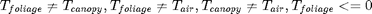
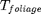
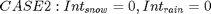
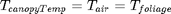
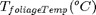
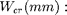
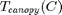

Contents
function [error,...%vapor fluxes in (mm)
energyPhaseChange]=... energy_balance(this,TfoliageTemp,dt,... TcanopyTemp,intRainOrg,intSnowOrg,... rainfall,netRad,latentHeat,vaporFluxEvap,vaporFluxSub)
Algorithm Description
calculate the energy balance of the foliage layer where there is intercepted snow. and the energy budget of foliage where there is no intercepted snow.
Energy balance is solved WITHIN the FOLIAGE and the boundary of this medium is ONLY the surrounding air of the canopy.


The energy budget MUST be balanced within the foliage medium by adjust .
Only the over portion of radiation is used as input in this circumstance.
if there is intercepted snow, no evapotranspiration but sublimation happens.


There is no energy balance,refreezing or melting process within this medium.
The foliage and snowpack will be treated as one medium to solve the energy balance.
The total radiation is imposed on the foliage medium first to estimate the evapotranspiration.
Then the "error" in the foliage medium will be input to balance of the budget of the snowpack layer.
output arguments
error (W/m^2): total energy balance. error=0 indecates the foliage (canopy) layer is balanced energyPhaseChange(J/m^2/s): released energy due to refreezing(+)/melting(-)
input arguments
 : temporary solution of emperature of the canopy material
dt (s): time interval,
 critical point of soil moisture
wilting point of soil moisture
WSoil (mm): soil moisture
 : temperature of the surrounding air of canopy
intSnowOrg(mm): intercepted snow at the last time step
intRainOrg(mm): intercepted rain at the last time step
rainfall(mm) : newly intercepted rainfall rather than the total rainfall
vaporFluxEvap (-mm/s):vapor flux due to evaporation
vaporFluxSub (-mm/s): vapor flux due to sublimation
advected energy flux
advectedEnergy = 4186.8 * Tcanopy.* rainfall/m2mm/dt;%VIC(wrong, rainfall in VIC is the total rainfall, Absurd error in VIC, 4186 is for depth in mm, 4186e3 should be used) Another ignorance in VIC, the advected energy by snow fall should also be added into the advected Energy
advectedEnergy=MixedHeatChange(TcanopyTemp,TfoliageTemp,rainfall+snowfall,this.CH_positive,this.CH_negative)/dt;
heat storage change in the intercepted snow %CREST only
deltaCC=MixedHeatChange(TfoliageTemp,this.TSurf,intSnowOrg+intRainOrg,this.CH_positive,this.CH_negative)/dt;
energy budget
error = sensibleHeat+netRad+advectedEnergy+latentHeat-deltaCC;
energy due to phase change
overstory cells without intercepted snow do/can not balance the budget by refreezing or melting process
energyPhaseChange(this.hasSnow)=EnergyByPhaseChange(dt,error,... TfoliageTemp(this.hasSnow),this.W(this.hasSnow),this.intSnow(this.hasSnow),... vaporFluxSub(this.hasSnow),vaporFluxEvap(this.hasSnow)); energyPhaseChange(~this.hasSnow)=0; error(this.hasSnow)=error(this.hasSnow)+energyPhaseChange(this.hasSnow);
end
The specified superclass 'RasterVariables' contains a parse error, cannot be found on MATLAB's search path, or is shadowed by another file with the same name.